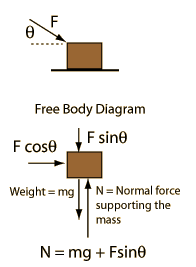

Mass with force at angle

Application of
Newton's second law
to a single mass.
Net force
=
mass
x
acceleration
For this case the net force is the
horizontal component
of the applied force F. For an applied force of F=
N at an angle of
degrees, the net force is
N.
Net force =
N =
kg x
m/s²
You may edit any of the data. When finished with data entry, click on the quantity you desire to calculate in the formula above. Quantities will not be forced to be consistent until you click on the desired quantity.
In U.S. common units this becomes:
Net force =
lb =
slug x
ft/s²
Add friction
Index
Newton's laws
Standard mechanics problems
HyperPhysics
*****
Mechanics
R Nave
Go Back